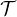
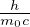

= m(v)
= m(v) = γm0
= γm0 impulso relativistico
impulso relativistico
E(v) =  + m0c2 energia relativistica
E2 = m02c4 + p2c2
 =
= 

In un sistema di N particelle valgono:
Per un fotone m0 = 0 ⇒ E = hν = ;p = =
Trasformazioni dell’impulso:
 = (γm0
= (γm0 ) Forza
) Forza
= F⊥ + F∥ = m0γ + m0γ3
+ m0γ3
Trasformazioni della forza:
Δλ = λ′- λ = (1 - cosθ) effetto Compton
ωc =  frequenza angolare di ciclotrone
frequenza angolare di ciclotrone
rc = γ raggio di ciclotrone
E = scontro tra protone fermo/in moto. E energia protone in moto. E’ energia finale del sistema


 allora
allora 


 allora
allora